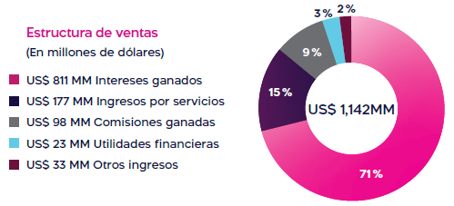
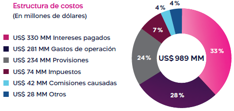
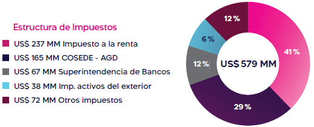
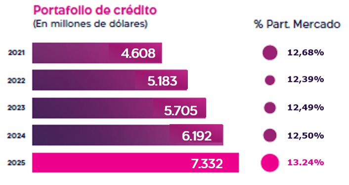
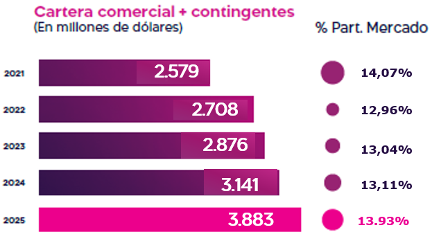
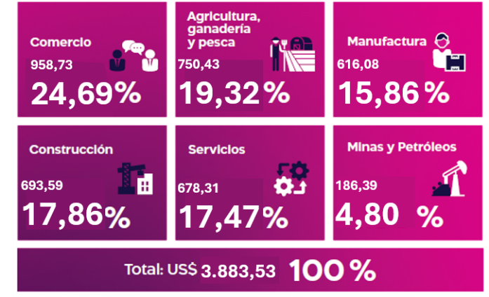
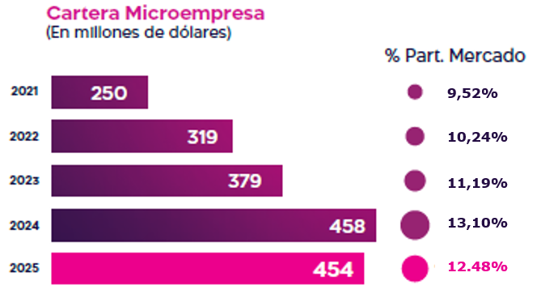
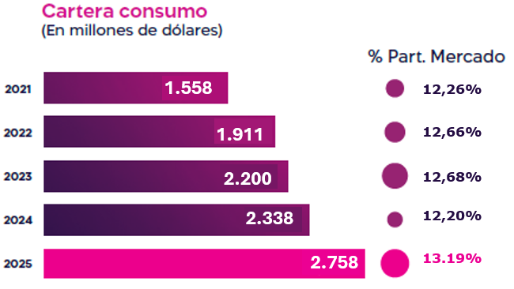
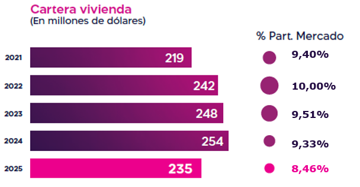

[GRI 201-1, 201-2, 201-4, 203-2, 3-3 | SASB FN-CB-000.A, FN-CB-000.B, FN-CB-240a.1, FN-CB-410a.1, FN-CB-410a.2, FN-CB-410b.1, FN-CB-410b.2, FN-CB-410b.3, FN-CB-410b.4 | NIIF S1 — Métricas y objetivos | NIIF S2 — Métricas y objetivos climáticos]
En 2025, consolidamos un desempeño económico sólido, sustentado en la ejecución del Plan Estratégico Conecta, la confianza de nuestros clientes y una gestión prudente de riesgos, liquidez y capital. El crecimiento sostenido de la cartera de crédito, el fortalecimiento de la captación y la eficiencia operativa nos permitieron mantener niveles adecuados de rentabilidad, solvencia y calidad de cartera, en un entorno financiero exigente y competitivo. Este desempeño nos permitió consolidarnos como el segundo banco del país en portafolio de crédito, cartera, depósitos totales, inversiones, contingentes netos y utilidades.
Nuestro desempeño económico refleja la capacidad del Banco para generar valor financiero de forma responsable, alineando los resultados del negocio con una gestión integral de riesgos y una asignación eficiente del capital, en coherencia con nuestro propósito y con las expectativas de inversionistas, reguladores y demás grupos de interés.
Indicadores clave de desempeño económico
[GRI 201-1 | SASB FN-CB-000.A | NIIF S1 — Métricas y objetivos]
Los principales indicadores económicos y financieros evidencian la solidez del modelo de negocio y el posicionamiento de Banco Guayaquil en el sistema financiero ecuatoriano. En 2025 registramos un crecimiento relevante en clientes activos, cartera de crédito, depósitos y rentabilidad, manteniendo indicadores de liquidez, solvencia y morosidad en niveles prudentes y superiores al promedio del sistema financiero.
Indicadores clave de desempeño económico 2024 - 2025
| Indicador | 2024 | 2025 | Variación / referencia |
|---|---|---|---|
| Clientes activos | 2,5 millones | 3,2 millones | +28 % |
| Créditos otorgados1 | US$ 6.123 millones | US$ 7.961 millones | +30 % |
| Cartera bruta de crédito2 | US$ 5.759 millones | US$ 6.817 millones | +18 % |
| Portafolio de crédito3 | US$ 6.192 millones | US$ 7.332 millones | Participación de mercado 2025: 13,24 % |
| Depósitos del público | US$ 6.535 millones | US$ 7.713 millones | +18,03 %; participación 2025: 12,73 % |
| Depósitos a plazo | US$ 3.036 millones | US$ 3.521 millones | +15,97 %; crecimiento anual de US$ 485 millones; participación 2025: 12,88 % |
| Utilidad operativa | US$ 350 millones | US$ 452 millones | +29 % |
| Utilidad neta | US$ 120 millones | US$ 153 millones | +27 % |
| ROA / Rentabilidad sobre activos | 1,53 % | 1,68 % | +0,15 pp Mide la rentabilidad de los activos, calculada como utilidad neta sobre activo promedio. |
| ROE | 16,68 % | 19,37 % | +2,69 pp |
| ROE Operativo | 52,53 % | 59,51 % | Utilidad operativa sobre patrimonio promedio. |
| Liquidez | 40,79 % | 33,22 % | Activos líquidos sobre depósitos del público. |
| Solvencia | 15,09 % | 14,22 % | Superior en 5,22 % al requerimiento legal en 2025. Representa un superávit de patrimonio técnico de US$ 384 millones. |
| Eficiencia | 28,87 % | 29,03 % | Índice de costos operativos sobre ventas; muestra la participación de los gastos operacionales en la generación de negocios. |
| Morosidad | 2,35 % | 2,36 % | Por debajo del sistema financiero 2025: 2,99 %. |
| Cobertura de cartera en mora | 140,03 % | 143,98 % | Provisiones de cartera constituidas sobre cartera en mora. |
| Cobertura con excedente patrimonial | 379,75 % | 345,77 % | Provisiones constituidas al portafolio de crédito más excedente de patrimonio técnico sobre cartera vencida. |
| Margen financiero | US$ 397 millones | US$ 481 millones | +21 %, impulsado por ingresos financieros y menor costo de fondeo. |
| Margen financiero porcentual | 6,01 % | 5,90 % | Por encima del promedio del sistema: 5,44 %. |
1. Reflejan el volumen de créditos colocados respecto al periodo reportado.
2. Corresponde al saldo de créditos respecto al periodo reportado.
3. Incluye la cartera de crédito y los contingentes asociados.
Estado de Pérdidas y Ganancias
[GRI 201-1, 201-4 | SASB FN-CB-000.B]
En 2025, el estado de resultados evidencia una mayor capacidad de generación de ingresos y una estructura de fondeo más eficiente. Los ingresos totales alcanzaron US$ 1.142 millones, impulsados principalmente por los intereses ganados, que representaron el 71 % del total, en línea con el crecimiento de la cartera bruta de crédito y la diversificación del portafolio.
Los ingresos por servicios sumaron US$ 177 millones, asociados al dinamismo transaccional en agencias, cajeros automáticos, Bancos del Barrio, canales digitales, cash management y banca telefónica, fortaleciendo la diversificación de nuestras fuentes de ingreso.
Durante el ejercicio, los costos financieros se redujeron en 8 % frente a 2024, como resultado de una gestión eficiente del fondeo, mientras que los gastos operativos crecieron 6 %, en línea con la expansión de la operación. Como resultado, la utilidad neta alcanzó US$ 153 millones, lo que representa un crecimiento del 27 % respecto al año anterior.
Estado de pérdidas y ganancias 2024 - 2025
| CUENTA | DIC. 2024 | DIC. 2025 | VAR. ANUAL | VAR % | Referencia |
|---|---|---|---|---|---|
| INGRESOS/VENTAS | 1.062.381 | 1.141.648 | 79.267 | 7 % | Crecimiento impulsado por intereses y servicios. |
| INTERESES GANADOS | 755.996 | 811.374 | 55.378 | 7 % | Asociado al crecimiento de la cartera bruta. |
| INGRESOS POR SERVICIOS | 157.497 | 176.650 | 19.153 | 12 % | Mayor dinamismo transaccional y digital. |
| COMISIONES GANADAS | 92.960 | 98.260 | 5.300 | 6 % | |
| OTROS INGRESOS | 26.652 | 28.324 | 1.672 | 6 % | |
| UTILIDADES FINANCIERAS | 28.462 | 23.343 | -5.119 | -18 % | |
| OTROS INGRESOS OPERACIONALES | 814 | 3.697 | 2.883 | 354 % | |
| GASTOS/COSTOS | 942.254 | 988.989 | 46.735 | 5 % | Crecimiento controlado frente al desempeño de ingresos |
| INTERESES CAUSADOS | 358.600 | 330.409 | -28.191 | -8 % | Optimización de la estructura de fondeo. |
| GASTOS DE OPERACIÓN | 263.983 | 280.565 | 16.582 | 6 % | Indicador de eficiencia 2025: 29,03 %. |
| PROVISIONES | 176.599 | 233.770 | 57.171 | 32 % | Fortalecimiento prudencial de cobertura de riesgo. |
| IMPUESTOS Y CONTRIBUCIONES | 75.814 | 56.705 | -19.109 | -25 % | |
| COMISIONES PAGADAS | 32.472 | 42.207 | 9.735 | 30 % | |
| PARTICIPACIÓN DE TRABAJADORES | 25.979 | 32.389 | 6.410 | 25 % | |
| PÉRDIDAS FINANCIERAS | 3.133 | 3.069 | -64 | -2 % | |
| OTROS GASTOS Y PÉRDIDAS | 4.546 | 7.335 | 2.789 | 61 % | |
| OTROS GASTOS OPERACIONALES | 1.128 | 2.540 | 1.412 | 126 % | |
| UTILIDAD NETA | 120.128 | 152.659 | 32.531 | 27 % | Mayor rentabilidad y capacidad de reinversión. |
Ingresos/Ventas
[GRI 201-1 | SASB FN-CB-000.A]
La composición de nuestros ingresos refleja un modelo de negocio diversificado. En 2025, los intereses ganados mantuvieron una participación del 71 %, mientras que los ingresos por servicios incrementaron su peso relativo, pasando del 15 % al 16 %, lo que evidencia el avance sostenido en la diversificación de fuentes de ingreso y la reducción de la dependencia de una sola línea de negocio.

Costos/Gastos
[GRI 201-1 | SASB FN-CB-000.B]
Del lado de los costos, la reducción de los intereses pagados fue el principal factor diferenciador del ejercicio, permitiendo contener el crecimiento total de egresos al 5 %, pese a la expansión del negocio. Los intereses causados redujeron su participación del 34 % al 29 %, compensando el incremento de las provisiones, que pasaron del 17 % al 20 %, reflejando una postura prudencial frente al crecimiento del portafolio.

Impuestos
[GRI 201-1, 201-4]
Como parte del valor distribuido al Estado, la estructura de impuestos y contribuciones acumulada en los últimos diez años evidencia el aporte sostenido del Banco a las finanzas públicas del país:

En los últimos diez años, el Banco ha aportado al Estado un total de US$ 579 millones, superando en 1,5 veces los dividendos distribuidos a sus accionistas en el mismo período.
Solidez del balance. liquidez y solvencia
[GRI 201-1 | SASB FN-CB-410a.1 | NIIF S1 — Gestión de riesgos]
La gestión del balance combinó crecimiento del crédito con una posición líquida y patrimonial prudente. La reducción de los activos líquidos frente a 2024 respondió a una mayor asignación de recursos hacia la colocación crediticia, manteniendo niveles adecuados para atender nuestras obligaciones y respaldar el crecimiento del negocio.
Al cierre de 2025, el índice de liquidez se ubicó en 33,22 %, superando en 12,97 puntos porcentuales el promedio del sistema financiero nacional. La solvencia patrimonial alcanzó 14,22 %, superando en 5,22 puntos porcentuales el requerimiento legal vigente y representando un superávit de patrimonio técnico de US$ 384 millones, fortaleciendo nuestra resiliencia ante escenarios adversos.
Como reflejo de nuestra solidez financiera, reputación institucional y capacidad de acceso a los mercados naturales de dinero, al cierre de septiembre de 2025 Banco Guayaquil mantuvo calificaciones de riesgo AAA y AAA-, otorgadas por PCR Pacific Credit Rating y BankWatch Ratings S.A., respectivamente. Estas calificaciones evidencian una posición financiera muy fuerte, una sobresaliente trayectoria de rentabilidad y perspectivas claras de estabilidad.
Resultados conforme a indicadores del balance 2025
| Indicador de balance | Resultado 2025 | Variación / referencia |
|---|---|---|
| Activos | US$ 9.735 MM | +12 % frente a 2024 |
| Activos + contingentes netos | US$ 12.712 MM | +16 %; participación de mercado: 12,99 % |
| Fondos disponibles | US$ 1.013 MM | -1 % frente a 2024 |
| Inversiones | US$ 1.511 MM | -7 % frente a 2024 |
| Activos líquidos | US$ 2.523 MM | Índice de liquidez: 33,22 % |
| Patrimonio | US$ 921 MM | +12 % frente a 2024 |
El Balance General se encuentra a continuación:
Balance General 2024 – 2025
Cifras en miles de dólares
| Cuenta | Dic. 2024 | Dic. 2025 | Variación | % |
|---|---|---|---|---|
| ACTIVOS | 8.728.641 | 9.734.685 | 1.006.044 | 12 % |
| FONDOS DISPONIBLES | 1.027.561 | 1.012.534 | -15.027 | -1 % |
| INVERSIONES | 1.619.089 | 1.510.919 | -108.170 | -7 % |
| CARTERA DE CRÉDITO NETA | 5.568.901 | 6.585.927 | 1.017.026 | 18 % |
| CUENTAS POR COBRAR | 94.294 | 115.406 | 21.112 | 22 % |
| BIENES ADJUDICADOS POR PAGO | 12.149 | 4.053 | -8.096 | -67 % |
| ACTIVO FIJO | 109.652 | 130.975 | 21.323 | 19 % |
| OTROS ACTIVOS | 296.995 | 374.871 | 77.876 | 26 % |
| PASIVOS | 7.905.878 | 8.813.835 | 907.956 | 11 % |
| OBLIGACIONES CON EL PÚBLICO | 6.534.999 | 7.713.106 | 1.178.107 | 18 % |
| OBLIGACIONES INMEDIATAS | 4.457 | 5.457 | 1.000 | 22 % |
| CUENTAS POR PAGAR | 275.552 | 282.410 | 6.858 | 2 % |
| OBLIGACIONES FINANCIERAS | 971.623 | 710.156 | -261.467 | -27 % |
| VALORES EN CIRCULACIÓN | 38.866 | 23.832 | -15.034 | -39 % |
| OBLIG. CONV. ACCIO. Y APORTES | 74.432 | 74.564 | 131 | 0 % |
| OTROS PASIVOS | 5.949 | 4.310 | -1.639 | -28 % |
| PATRIMONIO | 822.762 | 920.850 | 98.088 | 12 % |
| CAPITAL SOCIAL | 591.943 | 646.103 | 54.160 | 9 % |
| RESERVAS | 103.414 | 115.382 | 11.968 | 12 % |
| SUPERÁVIT POR VALUACIONES | 7.277 | 6.706 | -572 | -8 % |
| RESULTADOS | 120.128 | 152.659 | 32.532 | 27 % |
| TOTAL PASIVO + PATRIMONIO | 8.728.641 | 9.734.685 | 1.006.044 | 12 % |
| CONTINGENTES NETOS | 2.276.622 | 2.977.679 | 701.057 | 31 % |
| TOTAL ACTIVOS + CONTINGENTES NETOS | 11.005.263 | 12.712.364 | 1.707.101 | 16 % |
Generación y distribución de valor económico
[GRI 201-1, 201-4 | NIIF S1 — Métricas y objetivos]
En 2025 generamos valor económico por US$ 1.141,6 millones, lo que representa un crecimiento del 7,46 % frente a 2024. El valor económico distribuido alcanzó US$ 989,0 millones, destinado principalmente a gastos de funcionamiento, sueldos y prestaciones, pagos al gobierno y programas comunitarios.
El valor económico retenido fue de US$ 152,7 millones, equivalente a un incremento del 27,08 %, fortaleciendo nuestra capacidad de reinversión y sostenibilidad financiera de largo plazo. Durante el ejercicio no recibimos asistencia financiera del Gobierno.
Valor económico generado y distribuido 2024 - 2025
Cifras en millones de dólares
| Concepto | 2024 | 2025 | Variación |
|---|---|---|---|
| Valor económico generado | US$ 1.062,4 | US$ 1.141,6 | 7,46 % |
| Valor económico distribuido | US$ 942,3 | US$ 989,0 | 4,96 % |
| Gastos de funcionamiento | US$ 611,6 | US$ 658,5 | 7,67 % |
| Sueldos y prestaciones | US$ 132,1 | US$ 151,4 | 14,63 % |
| Pagos al gobierno | US$ 76,2 | US$ 57,3 | -24,83 % |
| Programas comunitarios | US$ 0,1 | US$ 0,1 | 15,00 % |
| Valor económico retenido | US$ 120,1 | US$ 152,7 | 27,08 % |
Depósitos y estructura de captaciones
[GRI 201-1 | SASB FN-CB-000.A, FN-CF-000.A]
En 2025 fortalecimos nuestra base de depósitos mediante el crecimiento sostenido de las captaciones del público, que alcanzaron US$ 7.713 millones, con un incremento anual del 18,03 % y una participación de mercado del 12,73 %. La estructura diversificada entre depósitos a la vista y a plazo permitió reducir el costo de los recursos captados de 4,4 % a 3,2 %, fortaleciendo el margen financiero y la eficiencia del modelo de negocio.
Depósitos según la estructura de captación en 2025
| Producto / indicador | Resultado 2025 (saldo) | Variación / referencia |
|---|---|---|
| Depósitos del público | US$ 7.713 millones | +18,03 %; participación de mercado: 12,73 % |
| Depósitos corrientes | US$ 2.086 millones | Participación de mercado: 14,06 % |
| Depósitos de ahorro | US$ 2.037 millones | +33,7 % frente a 2024; participación de mercado: 11,25 % |
| Depósitos a plazo | US$ 3.521 millones | +15,97 %; crecimiento anual de US$ 485 millones; participación de mercado: 12,88 % |
| Estructura de depósitos | 54 % a la vista / 46 % a plazo | Diversificación y estabilidad de las captaciones |
| Costo de recursos captados | 3,2 % | Reducción frente a 4,4 % en 2024 |
Cuentas corrientes y de ahorro
Resumen de cuentas corrientes y de ahorro en 2025
| Producto | Número de cuentas | Saldo al cierre 2025 |
|---|---|---|
| Cuentas corrientes | 404.086 | US$ 2.095 millones |
| Cuentas de ahorro | 4.250.861 | US$ 2.038 millones |
| Total | 4.655.147 | US$ 4.133 millones |
Distribución por segmento en 2025
| Segmento | Total de cuentas | Saldo total |
|---|---|---|
| Personas | 4.603.768 | US$ 2.136 millones |
| PYME | 37.504 | US$ 627 millones |
| Empresas | 12.603 | US$ 632 millones |
| Corporativo | 1.272 | US$ 737 millones |
| Total | 4.655.147 | US$ 4.133 millones |
Desempeño del portafolio de crédito
[GRI 201-1 | SASB FN-CB-000.A, FN-CF-000.B| NIIF S1 — Métricas y objetivos]
En 2025, nuestro portafolio de crédito alcanzó un saldo de US$ 7.332 millones, con un incremento anual de US$ 1.140 millones y una participación de mercado del 13,24 %. El 97,1 % de la cartera se ubicó en categoría de riesgo normal, reflejando la efectividad de nuestras políticas de originación, seguimiento y control del riesgo crediticio.

Portafolio de crédito por calificación de riesgo
La calificación de activos de riesgo y contingentes constituye el proceso de mayor importancia identificado en la auditoría de los estados financieros consolidados de 2025, debido a la complejidad normativa relacionada con la determinación de las provisiones y el alto número de variables que se deben considerar. La auditoría externa incluyó la evaluación de controles, bases de datos, criterios de calificación y provisiones constituidas, confirmando su consistencia con la normativa vigente.
Portafolio de crédito por calificación de riesgo en 2025
| Calificación | Portafolio (US$ miles) | Provisiones constituidas (US$ miles) |
|---|---|---|
| Riesgo normal | 7.119.650 | 72.417 |
| Riesgo potencial | 74.044 | 5.725 |
| Deficiente | 30.575 | 9.714 |
| Dudoso recaudo | 31.624 | 21.683 |
| Pérdida | 76.035 | 75.910 |
| Total | 7.331.928 | 185.449 |
Nota: De conformidad con los estados financieros consolidados al 31 de diciembre de 2025.
Distribución porcentual del portafolio de crédito en 2025
Crédito comercial-Productivo
Al cierre del año, el crédito comercial, incluidos los contingentes, alcanzó un saldo de US$ 3.883 millones, con un crecimiento anual de US$ 742 millones, equivalente a un incremento del 23,63 %, lo que permitió alcanzar una participación de mercado del 13,93 %. Este desempeño refleja nuestro rol como aliado estratégico de los sectores productivos del país.
Este crecimiento estuvo acompañado por el dinamismo del crédito productivo, que registró una variación anual del 24,4 %, y por el liderazgo en el segmento corporativo, con una participación de mercado del 20,78 % al cierre de 2025.

Crédito comercial por sector económico
La composición de la cartera evidencia una adecuada diversificación sectorial, lo que contribuye a una gestión prudente del portafolio y permite respaldar de manera equilibrada a distintas actividades económicas.

Crédito comercial por segmento
La distribución de nuestro crédito comercial por subsegmento evidencia nuestro rol en el financiamiento de empresas de distintos tamaños y necesidades. En 2025, la mayor concentración de colocaciones correspondió al segmento corporativo, mientras que los segmentos empresarial y PYME mantuvieron una participación relevante en número de clientes, reflejando una oferta financiera diversificada y adaptada a cada perfil de negocio.
Cartera de crédito por segmento en 2025
| Variable | Corporativo | Empresarial | Pyme | Comercial (Total) |
|---|---|---|---|---|
| No. de operaciones | 13.701 | 6.175 | 10.574 | 30.450 |
| Monto de colocación (US$) | US$ 4.223.876.862 | US$ 366.552.866 | US$ 233.851.230 | US$ 4.824.280.958 |
| No. de Clientes de colocaciones | 758 | 586 | 1.088 | 2.432 |
| Monto promedio por operación (US$/ operación) | US$ 308.290 | US$ 59.361 | US$ 22.116 | US$ 158.433 |
| Monto promedio por cliente (US$/ cliente) | US$ 5.572.397 | US$ 625.517 | US$ 214.937 | US$ 1.983.668 |
| Depósito a plazo fijo (US$) | US$111.568.672 | US$ 6.723.960 | US$ 12.400.991 | US$ 130.693.623 |
| Saldo de cartera (US$) | US$ 2.877.770.367 | US$176.853.303 | US$ 132.943.231 | US$ 3.187.566.900 |
| No. de clientes con saldo de cartera | 6.255 | 2.686 | 4.324 | 13.265 |
Cartera de crédito por género y segmento en 2025
| Variable | Género | Corporativo | Empresarial | Pyme | Comercial | Total |
|---|---|---|---|---|---|---|
| No. de clientes de colocación | Mujer | 133 | 149 | 308 | 590 | 2.432 |
| Hombre | 545 | 427 | 774 | 1.746 | ||
| No Disponible | 80 | 10 | 6 | 96 | ||
| Monto de colocación (US$) | Mujer | US$ 610.162,276 | US$ 55.302,319 | US$ 38.361,282 | US$ 70.825,877 | US$ 4.824.280,958 |
| Hombre | US$ 2.868.833,667 | US$ 168.120,125 | US$ 173.594,096 | US$ 3.210.547,889 | ||
| No Disponible | US$ 885.481,684 | US$ 7.709,359 | US$ 16.716,149 | US$ 909.907,192 |
Microcrédito
Durante 2025, mantuvimos una gestión focalizada del microcrédito, priorizando la calidad y sostenibilidad del portafolio, junto con el acompañamiento financiero a emprendedores y pequeños negocios. Como resultado, la cartera de microcrédito alcanzó un saldo de US$ 454 millones, con una participación de mercado del 12,48 %.

Crédito de consumo
El crédito de consumo cerró el ejercicio con un saldo de US$ 2.758 millones, registrando un crecimiento anual de US$ 420 millones. Este desempeño superó el crecimiento del sistema financiero y nos permitió alcanzar una participación de mercado del 13,19 % en este segmento.

Crédito de vivienda
Al cierre de 2025, la cartera de crédito de vivienda se ubicó en US$ 235 millones, reflejando un descenso frente a 2024, y permitió cerrar el año con una participación de mercado del 8,46 %.

Tarjetas de crédito
En 2025, fortalecimos el acceso a financiamiento flexible y seguro a través de nuestras tarjetas de crédito. Registramos 854.985 tarjetas, incluyendo 141.499 nuevas, con una facturación anual de US$ 2.209 millones, lo que representa un crecimiento del 9,7 % frente al año anterior.
Tarjetas de crédito por tipo de cliente en 2025
| Tipo de cliente | Clientes existentes | Clientes nuevos | Total clientes | Saldo al cierre 2025 |
|---|---|---|---|---|
| Personas | 98.228 | 32.478 | 130.706 | US$ 96,7 millones |
| Empresas | 167 | 36 | 203 | US$ 4,3 millones |
| Total | 98.395 | 32.514 | 130.909 | US$ 101,0 millones |
Tarjetas de crédito de personas por segmento en 2025
| Segmento principal | Total clientes | Saldo al cierre 2025 |
|---|---|---|
| Masivo Digital | 62.592 | US$ 49,1 millones |
| Masivo Presencial | 56.286 | US$ 29,1 millones |
| Preferente | 6.929 | US$ 12,3 millones |
| Micro, Micro Plus y Micro Premium | 3.286 | US$ 2,8 millones |
| Otros segmentos | 613 | US$ 3,4 millones |
| Total Banca Personas | 130.706 | US$ 96,7 millones |
Tarjetas de crédito de personas por género en 2025
| Género | Total de clientes | Participación |
|---|---|---|
| Hombres | 66.303 | 50,7 % |
| Mujeres | 64.383 | 49,3 % |
| No disponible | 20 | 0,02 % |
| Total | 130.706 | 100,0 % |
Nota: La categoría “No disponible” corresponde a registros sin información de género en la base reportada.
Tarjetas de débito
Las tarjetas de débito permiten a nuestros clientes administrar sus recursos de forma sencilla, segura y sin necesidad de portar efectivo. En 2025, registramos 2,5 millones de tarjetas de débito, incluyendo 608 mil nuevas tarjetas, con una facturación anual de US$ 1.128 millones, lo que representa un crecimiento del 27,2 % frente a 2024.
Fondeo internacional y financiamiento estructurado
En 2025, mantuvimos una estrategia activa de acceso a recursos de organismos, bancos e instituciones financieras aliadas, orientada a diversificar nuestras fuentes de financiamiento y acompañar el crecimiento del negocio. Al cierre del año, el portafolio vigente de estas operaciones alcanzó US$ 759,0 millones, y el destino de los recursos es principalmente para capital de trabajo, operaciones de comercio exterior, MIPYMES, cartera de mujeres y proyectos con enfoque ambiental y social.
Esta estructura refleja nuestra capacidad para movilizar recursos de mediano y largo plazo, fortalecer la liquidez institucional y canalizar financiamiento hacia sectores productivos, empresas, emprendedores y actividades alineadas con criterios de sostenibilidad.
Fondeo internacional por destino de los recursos en 2025
Cifras en millones de dólares
| Destino de los recursos | Capital vigente | Participación |
|---|---|---|
| Capital de trabajo | 380,2 | 50,1 % |
| MIPYMES, cartera de mujeres y financiamiento sostenible | 236,7 | 31,2 % |
| Operaciones trade / comercio exterior | 142,1 | 18,7 % |
| Total | 759,0 | 100,0 % |
Financiamiento e inversión sostenible
[GRI 3-3, 203-2 | SASB FN-CB-240a.1 | NIIF S1 — Estrategia, Gestión de riesgos]
En 2025, mantuvimos una cartera de financiamiento sostenible orientada a acompañar proyectos y clientes con impacto social y ambiental positivo. Al cierre del año, esta cartera alcanzó US$ 578,3 millones, distribuida principalmente en financiamiento de género, construcción sostenible y producción sostenible o eficiencia energética.
La variación frente a 2024 responde principalmente al vencimiento y amortización programada de operaciones vigentes, especialmente en el segmento productivo, sin una reposición equivalente durante el período. A pesar de esta reducción, el portafolio sostenible continúa reflejando nuestro compromiso con la canalización de recursos hacia actividades alineadas con la inclusión financiera, la transición hacia una economía baja en carbono y la gestión responsable de riesgos ambientales y sociales.
Como parte de esta oferta, fortalecimos Crédito Terra, producto diseñado para financiar líneas de crédito con beneficios ambientales o sociales, incluyendo construcción sostenible, generación fotovoltaica e industria sostenible. En 2025, Crédito Terra alcanzó un valor monetario de US$ 15,0 millones, asociado a 3 operaciones y 2 clientes en la línea de negocio de Banca Empresas y Cadena de Valor.
De manera complementaria, aplicamos nuestro Sistema de Administración de Riesgos Ambientales y Sociales —SARAS— como herramienta de debida diligencia para identificar, evaluar y gestionar riesgos ambientales y sociales en el proceso crediticio. En 2025, el financiamiento sujeto a debida diligencia SARAS alcanzó US$ 1.635,4 millones, equivalente al 42,35 % de la cartera comercial, asociado a 226 clientes. Este proceso fortalece la calidad del portafolio, la toma de decisiones crediticias y la gestión prudente de riesgos.
Cartera de financiamiento sostenible en 2025
Cifras en millones de dólares
| Segmento | Categoría | Destino | Cartera 2024 | Cartera 2025 | Variación anual |
|---|---|---|---|---|---|
| Productivo | Financiamiento social | Financiamiento de género | US$ 533,1 | US$ 285,1 | -47 % |
| Microcrédito | Financiamiento social | Financiamiento de género | US$ 199,1 | US$ 193,4 | -3 % |
| Productivo | Financiamiento verde | Construcción sostenible | US$ 64,0 | US$ 45,6 | -29 % |
| Productivo | Financiamiento verde | Producción sostenible / eficiencia energética | US$ 60,4 | US$ 54,2 | -10 % |
| Total cartera sostenible | US$ 856,7 | US$ 578,3 | -33 % | ||
Indicadores complementarios de finanzas sostenibles y gestión A&S en 2025
| Indicador | Resultado 2025 | Referencia |
|---|---|---|
| Crédito Terra | US$ 15,0 millones | 3 operaciones y 2 clientes |
| Financiamiento con debida diligencia SARAS | US$ 1.635,4 millones | 42,35 % de la cartera comercial |
| Clientes con debida diligencia SARAS | 226 clientes | 1,92 % de clientes de cartera comercial |
| Empresas sujetas a filtro ambiental y/o social positivo | 22 empresas | US$ 102,6 millones |
| Empresas sujetas a filtro ambiental y/o social negativo | 1 empresa | US$ 13,5 millones |
Nota: SARAS corresponde al Sistema de Administración de Riesgos Ambientales y Sociales. Los filtros positivos incluyen enfoques como construcción sostenible, tratamiento de aguas residuales y energía renovable; los filtros negativos consideran actividades en lista de exclusión.
Bono verde
[GRI 203-2, 3-3 | SASB FN-CB-240a.1 | NIIF S1 — Estrategia, Gestión de riesgos]
Como parte de nuestra estrategia de financiamiento e inversión sostenible, continuamos dando seguimiento al uso de los recursos del Bono Verde emitido en 2023, estructurado bajo el Marco de Referencia de Bonos Verdes de Banco Guayaquil y alineado con los Principios de Bonos Verdes de ICMA. Esta emisión canaliza recursos hacia activos verdes elegibles en categorías como eficiencia energética, energía renovable, administración sostenible de recursos naturales y edificios verdes.
Al cierre de 2025, los préstamos vigentes asociados al Bono Verde alcanzaron US$ 14,2 millones, concentrados principalmente en edificios verdes y energía renovable. Los proyectos financiados contribuyeron a impactos ambientales medibles, entre ellos ahorro de agua, ahorro de energía, generación renovable y reducción de emisiones de GEI.
Impactos ambientales destacados del Bono Verde en 2025
| Indicador | Resultado |
|---|---|
| Préstamos vigentes del Bono Verde al cierre de 2025 | US$ 14,2 millones |
| Generación anual de energía renovable | 762,48 MWh |
| Capacidad renovable construida | 0,44 MW |
| Reducción anual de emisiones GEI por energía renovable | 225,16 t CO₂eq |
| Edificios construidos con sellos elegibles | 5 edificios |
| Superficie de edificios verdes construidos | 101.599,96 m² |
| Ahorro anual de agua en edificios certificados | 165.364,64 m³ |
| Ahorro anual de energía en edificios certificados | 3.200.930 kWh |
| Emisiones GEI reducidas o evitadas en edificios certificados | 1.636,76 t CO₂e |